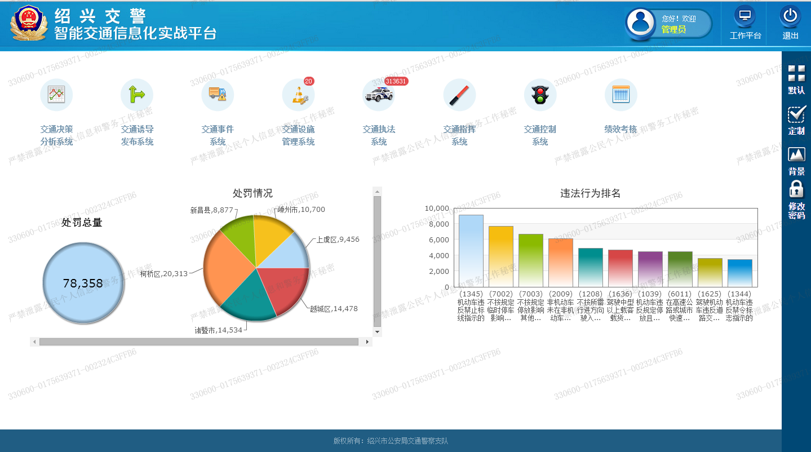

围绕“一中心、两平台、九大业务子系统”进行设计，以“安全、有序、畅通”作为指导精神，从“人、车、路”三个方面开展建设。 一中心为交通大数据中心、两平台为应用支撑平台、安全支撑平台，九大业务子系统为交通违法管理系统、交通指挥系统、交通事件系统、交通诱导系统、交通控制系统、交通设施管理系统、交通决策分析系统、数据交换平台、绩效考核系统九大业务子系统。 基于IaaS、PaaS、SaaS三层云架构，设计智能交通总体功能架构。平台即服务层（PaaS），主要部署业务支撑平台、安全支撑平台以及交通大数据中心，为整个系统提供统一支撑。PaaS层与IaaS层对接工作，待下阶段IaaS完善工作时同步对接。 软件即服务层（SaaS），从交通执法、交通指挥、交通事件、交通控制、交通设施管理、诱导发布、决策分析、绩效考核、数据交换九大业务出发，基于一中心、两平台，建设九大业务应用系统，提高交警业务能力。
